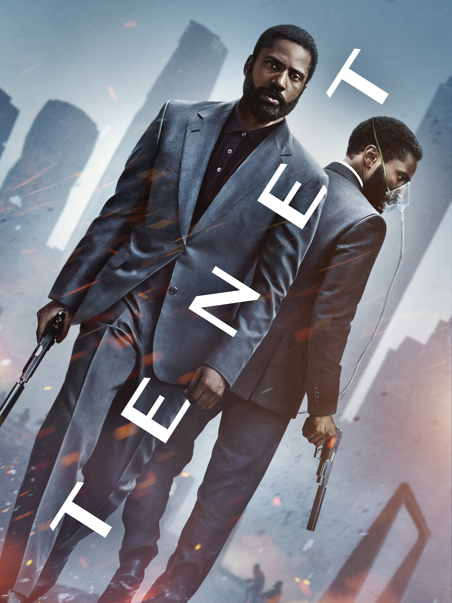

Tenet

- Direção: Christopher Nolan
- Produção: Christopher Nolan, Emma Thomas
- Roteiro: Christopher Nolan
- Elenco: John David Washington, Kenneth Branagh, Robert Pattinson, Elizabeth Debicki
- Música: Ludwig Göransson
- Estúdio: Syncopy, Warner Bros. Pictures
- Distribuição: Warner Bros. Pictures
- Lançamento: 29 de outubro de 2020
- Duração: 150 minutos
- Idioma: Inglês
- Gênero: Ficção Científica, Suspense
- Sensura: 14 Anos
- Sinopse: Um agente da CIA conhecido como O Protagonista (John David Washington) é recrutado por uma organização misteriosa, chamada Tenet, para participar de uma missão de escala global. Eles precisam impedir que Andrei Sator (Kenneth Branagh), um renegado oligarca russo com meios de se comunicar com o futuro, inicie a Terceira Guerra Mundial. A organização está em posse de uma arma de fogo que consegue fazer o tempo correr ao contrário, acreditando que o objeto veio do futuro. Com essa habilidade em mãos, O Protagonista precisará usá-la como forma de se opor à ameaça que está por vir, impedindo que os planos de Sator se concretizem.